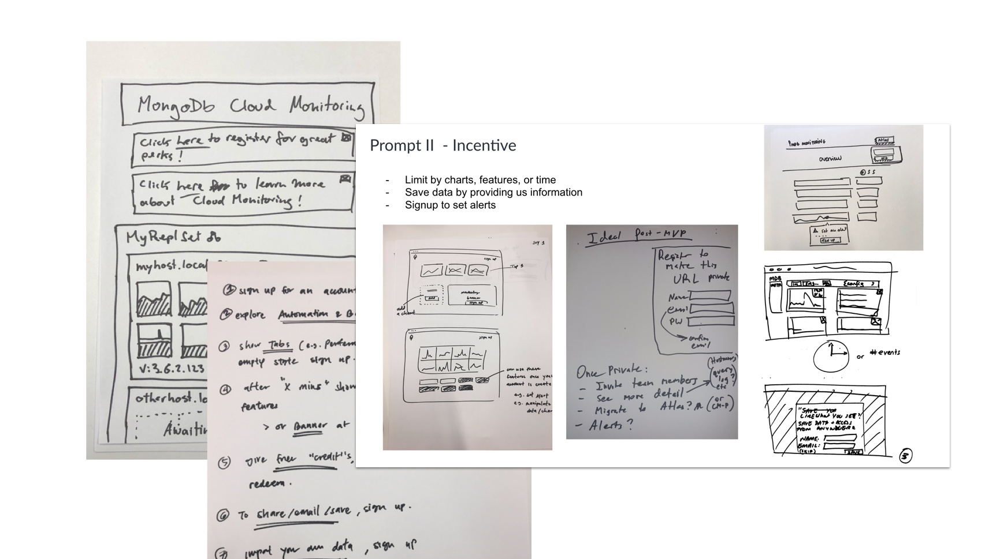
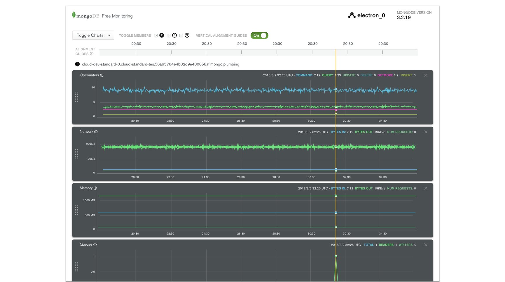
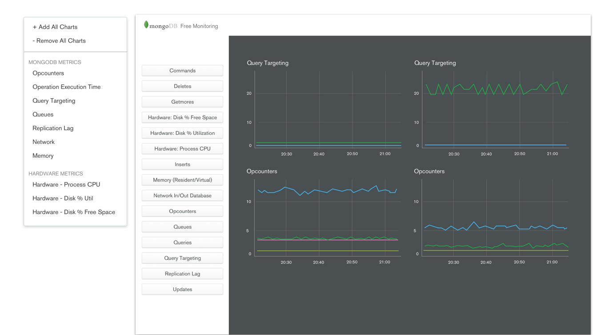
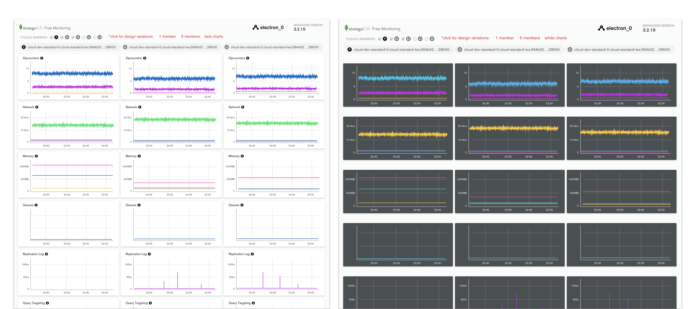
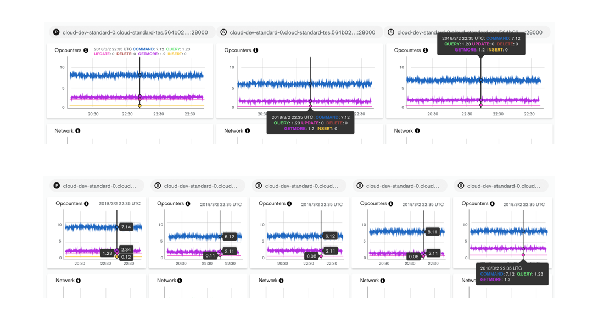
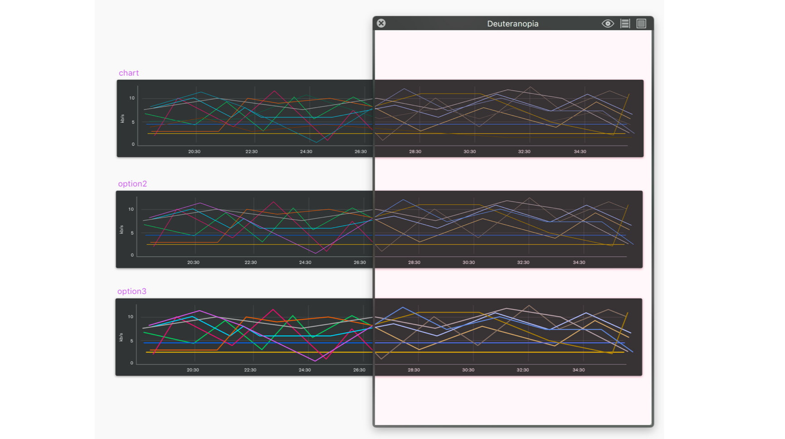
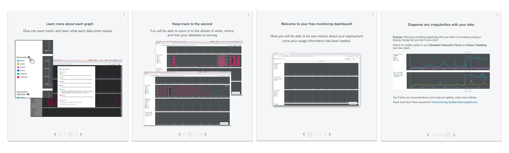

At MongoDB I solve complex technical problems by thinking and designing with intention in our end-to-end product experiences. I had previously interned at MongoDB in the summer of 2016. From looking at my intern project from the archives, I'm proud of how far I've come.
In order to be more competitive in the database landscape as well as plan for future projects on the roadmap, MongoDB wanted to introduce the feature of API Keys to our Cloud system.

API Keys in this case refers to a set of one or more keys the admin of each organization can generate then give to his or her team members. Each key can have its own permissions and can also be logged so the admin can see how each keys used. Note: when this project was started, we originally all called it ‘Service Users’ so some early screenshots will show different naming - more of that to come.
I focused on three features 1) How to display and list out the Service Users, 2) How to add new Service Users 3) How to edit Service Users. Here was the first and last iterations on the add/edit form. There were many changes from breaking up the form into a two step process to changing the scope entirely so we would just auto-generate a Public Key (formally called Unique Service User Name) for you.

Since this project was dubbed ’Service Users’ in the beginning, there was the idea this would some how roll under our regular user list. However with closer investigation, I realized 1) the way users are displayed on the organization level vs the project level was totally different! 2) if we just appended our service users right under, it wasn’t super accessible or scalable 3) the naming conventions that made sense to us internally, seemed more and more confusing as I was trying to display it in an easily understable manner.

For the first round of testing, I A/B tested the tab versus list format of displaying Service Users and quickly validated my hypothesis - the tab format was unanimously chosen over the list. Users explained its as easier to navigate and to see everything without scrolling.

Something that also caused a lot of confusion was the names Console Users vs Service Users that the stakeholders were using. However, no one I tested on understood what was what these terms were at first glance. When they did click on it and saw the list or empty states, they could guess based on context but that was not what we were going for - we wanted these concepts to be understood intuitively.

During this whole process I collected all user feedback on my Product Design Document (above). It helped me provide transparency to my team and stakeholders and allowed me to keep track all the changes I did. Through multiple rounds of iterations and user testing, some other aspects of the design that changed include the sidebar navigation along with the naming convention itself.

After much debating, much testing, we ended up putting everything under a new navigation category called ‘Access’ this included users, teams as well as the newly dubbed ‘API Keys.’ This felt more cohesive as these three things are were related to the level of access and permissions one could have within the organization or project. Also, we knew coming down the roadmap we had permission related projects that could also live under this newly created sections.
Here is a quick gif preview of the final designs. As you see the tab and naming has been consolidated as well as a clearer flow when creating a new API Key:

For future steps, I would like to evaluate if the introduction of this feature actually helped MongoDB become more competitive the market and determine how much this feature is used. This can be through data gathered over time on how many times users actually utilize this feature and whether they find value in it. Since this feature was only recently launched as of this post, I do not have these answers… yet!
In February 2018, the team was approach with the proposal - a free version of our current Monitoring tool that can only be used by paying customers. This version should be more lightweight and be built from scratch to be launch at our annual world wide conference in June 2018.
This new product, dubbed appropriately ’Free Monitoring,’ was geared towards database admins and developers and users who haven’t used our existing Cloud platform before. Ideally, if users really enjoyed this product, we would then upsell them to pay for our enterprise product, a more powerful version on the platform, down the road.
Since we had an existing Monitoring product in place, I took a look at what we had and did some user research into our current user pain points. Breaking down the page here, we can see there are three main components to this product - a top navigation, the central grouping of charts, and the bottom navigation toggles. The main pain points included a very high learning curve for new users and an overwhelming amount of information bombarding the users at once.
I also ran a design studio (screenshot above) with stakeholders to get a sense of what they were imagining and thinking of which was really useful going in. From the studio, the ideas generated revealed a need for 1) a good loading experience 2) some kind of incentive for the upsell and 3) consistent branding with our existing Monitoring tool.

The biggest con (and feature) of this new product we were offering was that data took 1-3 minutes to spin up which meant users won’t see any points plotted until the first minute and any line drawn until the 2-3 min mark. This challenge gave us the opportunity to surface information to the user during this wait time. I explored some onboarding experiences we can introduce during this time from teaching users how to build and add new charts to surfacing some static data and overview to the user first.
There was a need and ask for easier information digestibility for this product. In our existing system, all the charts were laid out side by side regardless of category. To match things up by time (which is the most natural way people looked to track their database health over time), they had to remember what time point they looked at then manually find that point again on another chart. To remedy this, I proposed a timeline horizontally stretched across charts of the same node. This allow people to get a sense quickly on was happening at the same point in time.
Navigation also needed a refresh since that was one reason users were getting overwhelmed. The fact we had a top and bottom navigation not to mention a different navigation UI for each confused many. Here I experimented with different ways and types of navigation possible. Ultimately we actually scrapped toggle completely for the MVP and just displayed all the charts (for now).
Since we had to greatly scope down the project - sadly we didn’t have time to build any of the onboarding, vertical alignment, and navigation. There was also the ask to display all the charts and nodes at once which meant a possibility of 5 charts across the page in one window.
Two major things I did test and iterated on many times were the color of the charts and the tooltip hover for the key information on each chart. From user testing, we found out users actually prefer the dark charts: it made the product seem sleeker and ‘premium’ despite being a free product.
The tooltip was a challenge that came up stakeholders pushed for displaying 5 charts on the page at once. Originally, the key for a chart only appeared on hover. This meant, if a user was not familiar with the colors, they did not know what each value and line meant until hover. We wanted to give the user the ability to get information at a quick glance so we introduced an always present legend. However, we also needed a tooltip to surface the exact number value on the chart. I played around with different types of hover types and did competitive research into this seemingly small interaction that actually was the most crucial selling point of our graphs.
There was also the challenge of accessibility. From user testing, we realized our current color spectrum was not easily distinguishable to someone who had specific types of color blindness. To remedy this, I worked closely with our product marketing/branding lead and used a colorblind effect app to figure out which colors and in which order were more accessible.
We launched Free Monitoring at MongoDB World 2018! Big shoutout to the Monitoring engineering team who were super patient with me and built all of this in time.

It was exciting to see something we worked so hard the past few months released into the wild. We also released a blog post detailing product and how to use it.
Since we had to scope this project way down, there were still a lot left on the to-do list - naturally, some problems surfaced because of this. For example, since there wasn’t an onboarding screen, we saw a large drop off rate once the user started up the product. We hypothesized many users were either confused by the long loading state where they couldn’t see anything, or didn’t find value in the product (which we really didn’t want!)
Secondly, there was an issue with the display message that appeared in the terminal. We had to show a lot of text due to legal reasons, but didn’t offer a way for users to toggle it off. That was definitely on our list.
Finally, there was no way for the user to contact us for help. We ad hoc threw an email address (literally just the email in text form) on the bottom of the page which a few people actually used but it was not ideal (both in the branding and usability standpoint).
Following this project, we started on Free Monitoring v2 where I worked on the onboarding experience (preview above) and an experience for users to find resources and help. Please contact me for more information on this project if you’re interested!